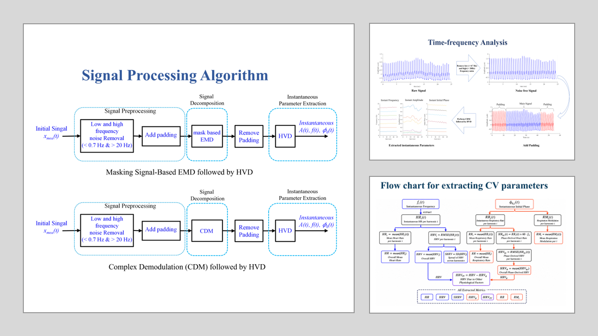

Trustworthy wearable sensing for cardiovascular health, outside the clinic.
A clinic-grade arterial signal is only useful if you can capture it outside the clinic — and trust it.
I build noninvasive cardiovascular sensing systems across the whole stack: soft microfluidic tactile sensors fabricated by hand, the custom analog electronics that read them, and the time-frequency algorithms that pull real arterial parameters out of noisy, moving, real-world signals. The through-line of my work is making a measurement honest — separating what the artery is doing from what the motion, the sensor, and the body add on top.

What I work on
A short overviewWhat the medical problem is, what data can answer it, what I designed and validated, and what a clinician gets when it is deployed. The figures throughout this page come from my own papers.
images/overview.webm, and swap it in.
Soft microfluidic tactile sensor at the radial and carotid arteries — acquisition, modeling, and validation against clinical references.
How I work
FramingI came to cardiovascular biosensing from photonics and electronics — a master's designing optical structures for communication, then years teaching circuits, instrumentation, and signal processing. That path is the reason I work across the whole stack rather than one slice of it: I am as comfortable patterning electrodes and laying out an analog front-end as I am deriving a time-frequency algorithm. The questions below are ones I can follow from the silicon to the signal to the patient.
Cardiovascular disease is monitored with instruments that live in hospitals: Doppler ultrasound, applanation tonometry, arterial catheters. They are accurate and they stay put. But the moments that matter for a heart patient — the recovery after exertion, the drift over weeks of rehabilitation — happen at home, where none of those instruments can follow.
A wearable sensor can go there, but it inherits problems the clinic never had. The person moves. The skin, the tape, and the sensor add their own mechanics to the signal. Body composition changes what the waveform even looks like. A device that reports a clean-looking number under these conditions is often reporting the artifact, not the artery.
My method is the same each time. Understand the physiological question. Build a sensor and the electronics that can acquire it noninvasively. Then develop the signal processing that separates the true arterial signal from everything the measurement adds to it, and validate the result against clinical reference standards on real patients. The honesty has to be built at every layer, or it is not there at all.
The program, mapped
Select a projectSix years of work across three method families. The horizontal axis is time; the lanes are the kinds of problem. Click any bar to read what it was and what came out of it, or filter by method family to see the through-line.
Select a project bar above to read about it.
What each thread found
DetailThe sensor, made by hand
I fabricate soft-polymer (PDMS) microfluidic tactile sensors end to end: photolithographic Au/Cr electrode patterning on Pyrex, SU-8 microchannel molds (100–150 µm), PDMS casting and plasma bonding — reaching 1.5 mm transducer spacing and 0.2 µm displacement resolution. I later moved to 3D-printed molds, cutting the fabrication cycle by removing spin-coating, UV exposure, and baking. The device is read by custom KiCad analog front-end PCBs — transimpedance amplifiers, demodulation, multi-transducer readout into NI DAQ and LabVIEW.
Modeling the motion artifact instead of hiding it
Rather than filter motion artifacts away and hope, I built an analytical model of where they come from — relating baseline drift and a newly defined set of time-varying system parameters to the measured pulse. The model explains mathematically how the sensor–tissue system distorts the true signal, at rest and in motion. A distortion you can write down is one you can separate out, rather than one that quietly corrupts the number.
Pulling parameters out of a nonstationary signal
An arterial pulse is nonstationary — its harmonics move beat to beat — so ordinary spectral tools blur exactly what matters. I develop MATLAB/Python pipelines built on EMD, complex demodulation, HVD, wavelet transforms, and HHT, including hybrid masked EMD–HVD and CDM–HVD methods for instantaneous, beat-by-beat parameter estimation. This is the core of my dissertation: recovering elasticity, viscosity, PWV, and augmentation index as they change in time.

Proving it against the clinic
None of the above counts until it holds up against reference instruments on real patients. I design and run IRB-approved human-subject studies — healthy volunteers, cardiac-rehabilitation patients at Sentara, a heart-transplant case study — acquiring sensor data alongside Doppler ultrasound, tonometry, and blood pressure, and validating derived parameters against those standards, including a multi-visit study of how body composition (BMI) changes signal quality across radial and carotid sites.
Publications
6 + 2 preprintsSubject-Specific Cardiovascular Signatures Revealed by Arterial Pulse Signals in Patients with Heart Disease — Part I: General Cases
@article{rahman2026signaturesI,
title = {Subject-specific cardiovascular signatures revealed by arterial pulse
signals in patients with heart disease---Part I: General cases},
author = {Rahman, Md Mahfuzur and Hasan, M. and May, J. F. and Herre, J. M. and
Reynolds, L. J. and Hao, Zhili},
year = {2026}, note = {Preprint, under review},
doi = {10.20944/preprints202608.2302.v1}}
Subject-Specific Cardiovascular Signatures Revealed by Arterial Pulse Signals in Patients with Heart Diseases — Part II: Special Cases
@article{hasan2026signaturesII,
title = {Subject-specific cardiovascular signatures revealed by arterial pulse
signals in patients with heart diseases---Part II: Special cases},
author = {Hasan, M. and Rahman, Md Mahfuzur and May, J. F. and Herre, J. M. and
Reynolds, L. and Hao, Zhili},
year = {2026}, note = {Preprint, under review},
doi = {10.20944/preprints202608.2324.v1}}
Radial and carotid arterial pulse signals for assessing cardiovascular function at rest and during post-exercise recovery in a heart transplant patient: a case study
@article{rahman2026radial,
title = {Radial and carotid arterial pulse signals for assessing cardiovascular
function at rest and during post-exercise recovery in a heart
transplant patient: a case study},
author = {Rahman, Md Mahfuzur and Hasan, M. and May, J. F. and Herre, J. M. and
Reynolds, L. and Hao, Zhili},
journal = {Medical Sensors and Imaging}, year = {2026}, note = {in press},
doi = {10.1088/2977-8425/ae4b40}}
An Analytical Model of Motion Artifacts in a Measured Arterial Pulse Signal — Part I: Accelerometers and PPG Sensors
@article{rahman2025motionI,
title = {An analytical model of motion artifacts in a measured arterial pulse
signal---Part I: Accelerometers and PPG sensors},
author = {Rahman, Md Mahfuzur and others},
journal = {Sensors}, volume = {25}, number = {18}, pages = {5710}, year = {2025},
doi = {10.3390/s25185710}}
An Analytical Model of Motion Artifacts in a Measured Arterial Pulse Signal — Part II: Tactile Sensors
@article{rahman2025motionII,
title = {An analytical model of motion artifacts in a measured arterial pulse
signal---Part II: Tactile sensors},
author = {Rahman, Md Mahfuzur and others},
journal = {Sensors}, volume = {25}, number = {18}, pages = {5700}, year = {2025},
doi = {10.3390/s25185700}}
Motion Artifacts At-Rest in Measured Arterial Pulse Signals: Time-Varying Amplitude in Each Harmonic and Non-Flat Harmonic-MA-Coupled Baseline
@article{rahman2025atrest,
title = {Motion artifacts at-rest in measured arterial pulse signals},
author = {Rahman, Md Mahfuzur and others},
journal = {Biosensors}, volume = {15}, number = {9}, pages = {578}, year = {2025},
doi = {10.3390/bios15090578}}
Pulse Measurement Alters the True Pulse Signal in an Artery: A Coupled String-SDOF Model
@article{toraskar2026pulse,
title = {Pulse measurement alters the true pulse signal in an artery:
A coupled string-SDOF model},
author = {Toraskar, S. and Rahman, Md Mahfuzur and Hao, Zhili},
journal = {ASME J. Engineering and Science in Medical Diagnostics and Therapy},
volume = {9}, number = {1}, pages = {011207}, year = {2026},
doi = {10.1115/1.4069099}}
Axial Wall Displacement at the Common Carotid Artery is Associated With the Lamb Waves
@article{hao2023axial,
title = {Axial wall displacement at the common carotid artery is associated
with the Lamb waves},
author = {Hao, Zhili and Rahman, Md Mahfuzur and others},
journal = {ASME J. Engineering and Science in Medical Diagnostics and Therapy},
volume = {6}, number = {1}, pages = {011008}, year = {2023},
doi = {10.1115/1.4056267}}
Measurement of Post-Exercise Response of Local Arterial Parameters Using an Adjustable Microfluidic Tactile Sensor
@inproceedings{rahman2021postexercise,
title = {Measurement of post-exercise response of local arterial parameters
using an adjustable microfluidic tactile sensor},
author = {Rahman, Md Mahfuzur and others},
booktitle = {IEEE EMBC}, pages = {1284--1287}, year = {2021},
doi = {10.1109/EMBC46164.2021.9630432}}
Improved Vibration-Model-Based Analysis for Estimation of Arterial Parameters From Noninvasively Measured Arterial Pulse Signals
@inproceedings{rahman2020vibration,
title = {Improved vibration-model-based analysis for estimation of arterial
parameters from noninvasively measured arterial pulse signals},
author = {Rahman, Md Mahfuzur and others},
booktitle = {ASME IMECE}, pages = {V005T05A079}, year = {2020},
doi = {10.1115/IMECE2020-24551}}
Full list on Google Scholar. The four papers shown with “et al.” have full author lists on Scholar.
How it gets built and validated
TranslationA sensor that only works on the bench has been demonstrated, not validated. My results are produced under conditions that mirror real use: custom hardware, human-subject protocols, and comparison against the clinical instruments a device would have to replace.
End-to-end device fabrication
Every layer is built in-house: photolithographic electrodes, SU-8 and 3D-printed microchannel molds, PDMS casting and plasma bonding, and custom KiCad analog front-end PCBs. Owning the whole stack means a problem in the signal can be traced to the layer that caused it.
Validation against clinical references
Sensor-derived parameters — PWV, augmentation index, arterial elasticity — are checked against Doppler ultrasound, applanation tonometry, and brachial blood pressure on the same subjects, at rest and across six post-exercise time points.
Human-subject protocols & governance
IRB-approved studies with healthy volunteers, cardiac-rehabilitation patients at Sentara, and a heart-transplant case study; REDCap data management; CITI-certified in biomedical human-subjects research through 2029.
Regulatory-compliant data handling is part of the method, not paperwork bolted on after.
Verification & characterization
Drafted and executed V&V test protocols; characterized sensitivity, linearity, frequency response, and repeatability under controlled bench conditions before any clinical use.
Where this goes
Forward viewWhat is established, what is running now, and what I would build next given my own lab or an R&D team.
Established
In progress
Next questions
CV & résumé, by destination
Pick oneMy work spans research, teaching, and device development, so I keep a version tailored to each path. Open whichever matches what you're hiring for.
Experience
TimelineNSF #1936005 · wearable cardiovascular sensing: fabrication, electronics, signal processing, clinical studies2019–2026
Instructor of record, materials-science lab; TA across dynamics, mechanics, design2019–2025
Developed and taught 14 undergraduate courses; supervised final-year projects2014–2017
Intro electrical engineering and microprocessor courses with labs2016–2017
Pre-PhD industry role: production planning, costing, and cross-functional coordination on deadline2017–2019
Teaching
6+ yearsSix-plus years across engineering fundamentals — instrumentation, electronics, circuits, digital signal processing, and laboratory-centered instruction — including instructor-of-record responsibility for a materials-science lab at ODU and, earlier, developing and teaching fourteen undergraduate courses in Bangladesh. Serving as primary instructor added the parts TA work does not touch: lab design, rubric-based assessment, LMS course management, and ABET outcome documentation.
I would develop Biomedical Instrumentation & Biosignal Processing, covering sensor design, analog front-end electronics, and time-frequency analysis of physiological signals, with laboratory modules in MATLAB, Python, and LabVIEW built directly from my sensing and signal-analysis research.
Courses I can teach immediately: Circuits & Electronics, Instrumentation & Measurement, Signals & Systems / Digital Signal Processing, Dynamics, Solid Mechanics, Materials Science, Microprocessors, Engineering Mathematics, and experimental / laboratory methods.
News
RecentEducation
Three degrees, two fieldsLet's talk.
On the market for 2026I'm seeking positions starting in 2026 across industry R&D, research, and academia — anywhere the work is building trustworthy measurement for wearable and clinical health technology. If that's the kind of problem you have, I'd like to hear about it.
Office
Dept. of Mechanical & Aerospace Engineering
Old Dominion University
Norfolk, Virginia 23529
+1 (757) 837-5456